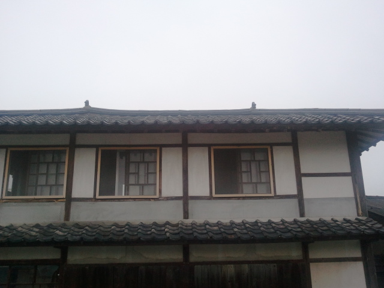
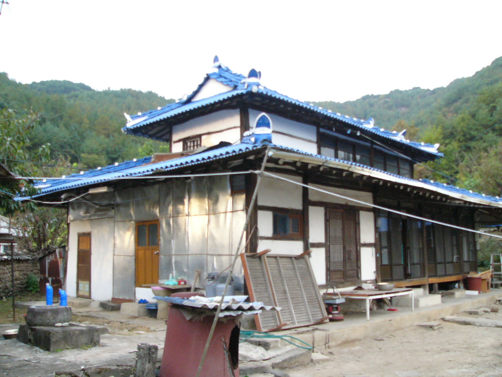

WEB EXHIBITION · 1923—1943
근대 한옥의 변천
만남과 변용의 집
한옥은 근대의 변화를 어떻게 자기 것으로 만들었을까요?
진안과 강경의 근대 한옥을 통해, 2층 주거와 시장 상점으로 변해 간 집의 이야기를 살펴봅니다.
두 채의 집 비교하기

전통의 지속 · 생활의 변화 · 근대의 한옥
01. 전시의 질문
집은 고정된 형식이 아니라,
시대에 응답하는 선택이었습니다.
1920~1940년대의 한옥은 예전 모습을 반복하는 데 그치지 않았습니다. 농촌에서는 생산과 주거를 함께 담기 위해 위로 확장했고, 시장에서는 상점의 얼굴을 갖추었으며, 새로운 구조기법을 자기 공간에 맞게 받아들였습니다.
02. TWO HOUSES
두 채의 집, 두 가지 변화
두 건물을 선택해 2층의 쓰임과 근대 한옥의 변화 방식을 살펴보세요.
03. PHOTO ARCHIVE
04. COMPARE
한눈에 비교하기
두 근대 한옥은 서로 다른 필요에 따라 새로운 공간을 만들었습니다.
| 비교 항목 | 진안 강정리 | 강경 연수당 |
|---|---|---|
| 건립 시기 | 1924 | 1923 |
| 기본 성격 | 농촌 주거·생산 | 시장 약방·상점 |
| 2층의 의미 | 잠실 | 상업 공간의 확장 |
| 변화의 키워드 | 수직 확장 | 상가 기능 |
THE LAST QUESTION
무엇을 지키고,
무엇을 바꾸었을까요?
근대 한옥은 사라진 전통이 아니라 변화한 사회와 생활에 맞추어 전통을 유지하고 새 요소를 선택적으로 결합한 건축입니다.
전시 처음으로